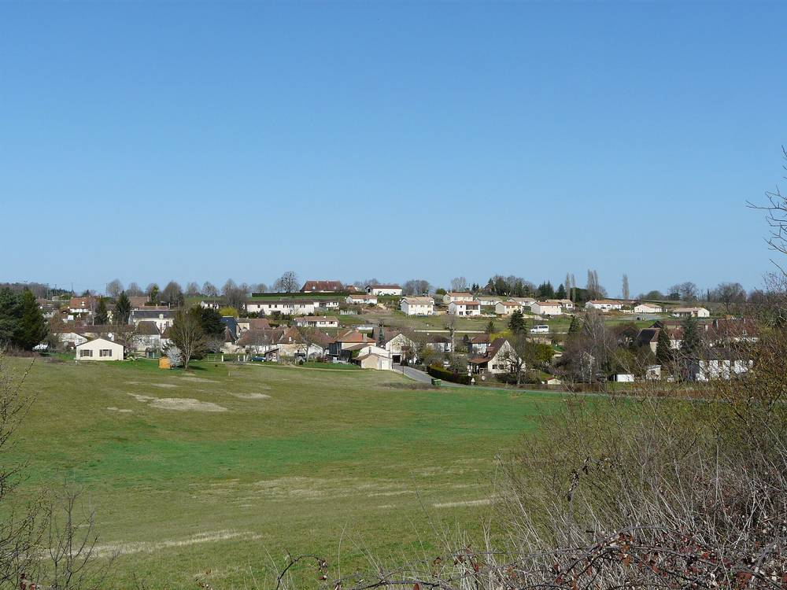

프랑스 도르도뉴 혼합경제회사 SEM 24, 광역 지자체 땅에 연 5,150MWh 태양광 준공…지역 제과 공장에 20년 고정가로 직접 판매

패널 7,668장·사업비 510만 유로 중 60만 유로는 누벨아키텐 지역 지원, 그랑 페리괴는 7ha를 30년 장기임대로 내주고 해마다 사용료…전력망 포화 때 출력 제한으로 저장 배터리 검토
프랑스 남서부 도르도뉴의 혼합경제회사(SEM) 'SEM 24 페리고르 에네르지(SEM 24 Périgord Énergies)'가 라두즈(La Douze)에 지은 '프라델(Pradelles) 태양광 단지'가 지난주 준공식을 열었다. 단지는 광역 도시공동체 그랑 페리괴(Grand Périgueux)가 가진 땅에 남향 패널 7,668장을 깔았으며, 2년 반 공사 끝에 올해 1월 말 가동에 들어갔고 연간 생산량은 주민 2,316명의 소비와 맞먹는 5,150MWh로 추정된다. 사업비 510만 유로 가운데 60만 유로는 누벨아키텐 지역(Région)이 지원했고, 그랑 페리괴는 7ha 땅을 30년 장기임대로 내주는 대신 해마다 사용료를 받는데 그 금액과 전기 판매 단가는 알려지지 않았다. 전기는 전력망으로 보내되 냉동 제과 회사 에미 데세르(Emmi Desserts)와 맺은 20년 고정가 직접 판매 계약에 따라 이 회사의 도르도뉴 공장 두 곳(콩다쉬르트랭쿠·트농)에 공급되며, 디디에 부디 에미 데세르 대표는 이 전기가 회사 전체 소비의 10%에 조금 못 미치지만 콩다쉬르트랭쿠 공장 소비로는 20~30%에 이른다며 2030년까지 재생에너지 전기 비중 30%를 목표로 한다고 밝혔다. 에리크 델마 SEM 24 사장은 "우리가 해 온 가장 큰 사업"이라며 전기요금이 크게 오르는 흐름에서 기업이 20년 고정가를 보장받는 이 모델을 다른 곳에서도 되풀이하고 싶다고 말했다. 다만 전력망이 꽉 찰 때 배전회사 에네디스(Enedis)가 출력을 잠시 끊게 해 수입 손실이 생기고 있어, SEM 24는 프라델을 포함한 자사 발전소에 저장 배터리를 두는 방안을 검토하고 있으며 내년 봄쯤 결론을 낼 계획이다.
시민에너지 관점
독일 함부르크 시민들은 2013년 주민투표로 민간에 넘어갔던 전력·가스·지역난방 배관망을 시가 다시 사들이도록 결정해, 에너지 기반을 지역이 쥐어야 한다는 뜻을 분명히 했다. 지자체가 땅을 내주고 지역 에너지회사가 발전소를 지어 지역 공장에 20년 고정가로 파는 프라델 방식은 공공부지 태양광과 지역 기업의 재생에너지 조달을 한 사업에 묶은 본보기다. 공공이 참여하는 회사가 짓는 것이면 이미 지역 소유가 아니냐는 반문이 있을 수 있지만, 이번 사업에서는 주민 출자 몫이 드러나지 않아 수익과 결정권이 주민에게까지 닿는지는 알 수 없다. 공공부지와 지자체 에너지공사 태양광을 늘리려는 우리도 처음부터 지자체 몫에 주민·협동조합 출자를 더하는 구조를 설계해 지역 기업의 RE100과 주민 소득을 함께 잡아야 한다.
출처: Sud Ouest 2026-11-02 비르지니 데스메(Virginie Desmet) 원문 보기
출처: Dordogne Libre 2026-11-02 클로드엘렌 이바르(Claude-Hélène Yvard) 원문 보기
フランス・ドルドーニュの混合経済会社SEM 24、広域自治体の土地に年5,150MWhの太陽光発電所が完成…地元の製菓工場に20年固定価格で直接販売
パネル7,668枚・事業費510万ユーロのうち60万ユーロはヌーヴェル＝アキテーヌ地域圏が支援、グラン・ペリグーは7haを30年の長期賃貸で提供し毎年使用料…送電網の飽和時の出力制限で蓄電池を検討
フランス南西部ドルドーニュ県の混合経済会社（SEM）「SEM 24ペリゴール・エネルジー（SEM 24 Périgord Énergies）」がラ・ドゥーズ（La Douze）に建設した「プラデル（Pradelles）太陽光発電所」が先週、竣工式を開いた。発電所は広域都市共同体グラン・ペリグー（Grand Périgueux）が所有する土地に南向きのパネル7,668枚を並べたもので、2年半の工事を経て今年1月末に稼働を始め、年間発電量は住民2,316人の消費に相当する5,150MWhと見込まれる。事業費510万ユーロのうち60万ユーロはヌーヴェル＝アキテーヌ地域圏が支援し、グラン・ペリグーは7haの土地を30年の長期賃貸で提供する代わりに毎年使用料を受け取るが、その金額と電力の販売単価は明らかにされていない。電気は送電網に送られるが、冷凍菓子メーカーのエミ・デセール（Emmi Desserts）と結んだ20年固定価格の直接販売契約に基づき、同社のドルドーニュの2工場（コンダ＝シュル＝トランク、トノン）に供給される。ディディエ・ブディ社長は、この電気は会社全体の消費の10%弱だが、コンダ＝シュル＝トランク工場の消費では20〜30%に達するとし、2030年までに再生可能エネルギー電力の比率30%を目指すと述べた。エリック・デルマSEM 24社長は「これまで手がけた中で最大の事業だ」と語り、電気料金が大きく上がる流れの中で企業が20年間の固定価格を保証されるこのモデルをほかでも繰り返したいと話した。ただ、送電網が混雑した際に配電会社エネディス（Enedis）が一時的に出力を止めさせるため収入の損失が出ており、SEM 24はプラデルを含む自社の発電所に蓄電池を置く案を検討していて、来春ごろ結論を出す予定だ。
市民エネルギーの視点
ドイツ・ハンブルクの市民は2013年の住民投票で、民間の手に渡っていた電力・ガス・地域熱供給の配管網を市が買い戻すよう決め、エネルギーの基盤は地域が握るべきだという意思をはっきり示した。自治体が土地を提供し、地域のエネルギー会社が発電所を建てて地元の工場に20年固定価格で売るプラデル方式は、公有地の太陽光と地元企業の再生可能エネルギー調達を一つの事業に結びつけた手本だ。公共が参加する会社が建てるのならすでに地域の所有ではないかという反論もありうるが、今回の事業では住民の出資分が見えず、収益と決定権が住民にまで届くかはわからない。公有地や自治体エネルギー公社の太陽光を増やそうとする韓国も、最初から自治体の持ち分に住民・協同組合の出資を加える仕組みを設計し、地元企業のRE100と住民の所得を同時に実現すべきだ。
出典: Sud Ouest（シュド・ウエスト） 2026-11-02 ヴィルジニー・デスメ（Virginie Desmet） 原文を読む
出典: Dordogne Libre（ドルドーニュ・リーブル） 2026-11-02 クロード＝エレーヌ・イヴァール（Claude-Hélène Yvard） 原文を読む
法国多尔多涅混合经济公司SEM 24在区域政府土地上建成年发电5,150MWh光伏电站…以20年固定价格直接售电给当地甜点工厂
光伏板7,668块，项目费用510万欧元中60万欧元由新阿基坦大区资助，大佩里格以30年长期租赁提供7公顷土地并每年收取使用费…电网饱和时出力受限，正研究加装储能电池
法国西南部多尔多涅省的混合经济公司（SEM）"SEM 24佩里戈尔能源（SEM 24 Périgord Énergies）"在拉杜兹（La Douze）建设的"普拉代勒（Pradelles）光伏电站"上周举行了落成仪式。电站在大佩里格城市共同体（Grand Périgueux）所有的土地上铺设了7,668块朝南光伏板，经过两年半施工于今年1月底投运，年发电量估计为5,150MWh，相当于2,316名居民的用电量。项目费用510万欧元中有60万欧元由新阿基坦大区资助；大佩里格以30年长期租赁方式提供7公顷土地，每年收取使用费，但使用费金额和售电单价均未公开。电力输入电网，并根据与冷冻甜点企业埃米甜点（Emmi Desserts）签订的20年固定价格直接售电合同，供应该公司在多尔多涅的两家工厂（孔达-叙尔-特兰库、特农）。埃米甜点总裁迪迪埃·布迪表示，这部分电力不到公司总用电量的10%，但占孔达-叙尔-特兰库工厂用电量的20%至30%，公司目标是到2030年可再生能源电力占比达到30%。SEM 24总经理埃里克·德尔马称这是"我们做过的最大项目"，并表示在电价大幅上涨的趋势下，企业能锁定20年固定价格，希望在其他地方复制这一模式。不过，电网饱和时配电公司Enedis会要求暂时切断出力，造成收入损失，SEM 24正在研究在包括普拉代勒在内的自有电站加装储能电池，预计明年春季前后作出决定。
市民能源视角
德国汉堡市民在2013年的全民公投中决定由市政府买回已转入私人手中的电力、燃气和区域供热管网，明确表达了能源基础设施应由地方掌握的意愿。由地方政府提供土地、地方能源公司建设电站并以20年固定价格卖给本地工厂的普拉代勒模式，是把公共土地光伏与本地企业可再生能源采购结合在一个项目中的范例。有人可能会问，既然是有公共部门参与的公司建设的，难道不已经是地方所有吗？但这个项目看不到居民出资的份额，收益和决策权能否真正到达居民手中仍不清楚。正在扩大公共土地和地方能源公社光伏的韩国，也应从一开始就设计在地方政府股份之外加入居民和合作社出资的结构，同时实现本地企业的RE100和居民收入。
来源: 西南报（Sud Ouest） 2026-11-02 维尔日妮·德斯梅（Virginie Desmet） 查看原文
来源: 多尔多涅自由报（Dordogne Libre） 2026-11-02 克洛德-埃莱娜·伊瓦尔（Claude-Hélène Yvard） 查看原文
Dordogne mixed-economy company SEM 24 opens 5,150 MWh-a-year solar park on regional authority land, selling power to local dessert factories at a fixed price for 20 years
7,668 panels and a 5.1 million euro budget, 600,000 euros of it from the Nouvelle-Aquitaine region; Grand Périgueux leases 7 hectares for 30 years in return for an annual fee; grid curtailment at times of saturation has the company studying battery storage
The Pradelles solar park, built at La Douze in the Dordogne in south-west France by the mixed-economy company (SEM) SEM 24 Périgord Énergies, was formally inaugurated last week. The park has 7,668 south-facing panels on land owned by the Grand Périgueux urban community; it began operating at the end of January this year after two and a half years of construction, and its annual output is estimated at 5,150 MWh, equivalent to the consumption of 2,316 residents. Of the 5.1 million euro cost, 600,000 euros came from the Nouvelle-Aquitaine region, and Grand Périgueux has made 7 hectares available under a 30-year long-term lease in return for an annual fee; neither the fee nor the electricity price has been disclosed. The power is fed into the grid and, under a 20-year fixed-price direct sale contract, supplies two Dordogne factories of frozen dessert maker Emmi Desserts, at Condat-sur-Trincou and Thenon. Emmi Desserts' executive chairman Didier Boudy said the electricity would cover a little under 10% of the company's total consumption but 20 to 30% of the Condat-sur-Trincou site, adding that the group aims for 30% renewable electricity by 2030. Éric Delmas, managing director of SEM 24, called it "the biggest project we have carried out" and said that, with electricity prices heading sharply higher, he would like to repeat a model that guarantees a business a fixed price for 20 years. One drawback is that the grid operator Enedis temporarily cuts output when the network is saturated, causing lost revenue, so SEM 24 is studying battery storage at its plants, including Pradelles, and expects to decide around next spring.
Citizen Energy View
In a 2013 referendum, the citizens of Hamburg in Germany voted for the city to buy back the electricity, gas and district heating networks that had passed into private hands, making clear that the region should control its energy infrastructure. The Pradelles model, in which a local authority provides the land and a local energy company builds the plant and sells to local factories at a fixed price for 20 years, is an example of bringing public-land solar and local business renewable sourcing together in one project. Some may ask whether a plant built by a company with public participation is not already locally owned, but no residents' stake is visible in this project, so it is unclear whether the returns and the decision-making reach residents. Korea, which wants more solar on public land and through local government energy corporations, should design structures from the outset that add investment by residents and cooperatives alongside the local government's share, so that local companies' RE100 needs and residents' incomes are met together.
Source: Sud Ouest 2026-11-02 Virginie Desmet Read the original
Source: Dordogne Libre 2026-11-02 Claude-Hélène Yvard Read the original